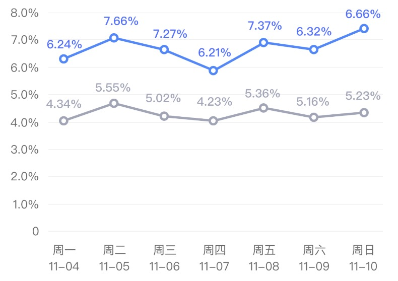

业务中涉及到了层叠折线图和层叠柱状图，其实主要全面的看了文档，就能知道哪些可以自定义实现，主要涉及的配置如下。
具体配置
1
2
3
4
5
6
7
8
|
chart.source(data, {
//改纵轴显示数据
value: {
formatter: function formatter(val) {
return val / 1000 + "k";
}
}
});
|
[官网实例](https://antv-f2.gitee.io/zh/examples/component/axis#label-callback)
1
2
3
4
5
6
7
8
|
chart.axis("value", {
//设置网格线为实线
grid: {
lineDash: null,
stroke: "#e8e8e8",
lineWidth: 1
}
});
|
1
2
3
4
5
6
7
8
9
10
11
12
13
14
15
16
17
18
19
|
data.forEach(function(obj) {
chart.guide().tag({
position: [obj.date, obj.value / 2],
content: obj.value,
offsetX: 13,
withPoint: false,
side: 0,
background: {
padding: [0, 0], // tag 内边距，使用同 css 盒模型的 padding
radius: 0, // tag 圆角
fill: obj.name === "1" ? "#F1F3FE" : "#F5F6F8" // tag 背景色
},
textStyle: {
width: 26,
fontSize: 10,
fill: obj.name === "1" ? "#6083FF" : "#9FA4B6"
}
});
});
|
[官网实例](https://antv-f2.gitee.io/zh/examples/component/guide#tag)
1
2
3
4
5
6
7
8
9
10
11
12
13
14
|
data.forEach(function(obj) {
chart.guide().text({
top: true,
position: [obj.date, obj.value],
content: obj.value,
style: {
textBaseline: "bottom",
textAlign: "center",
fill: obj.name === "1" ? "#4D6AFF" : "#9FA4B6", // 文本颜色
fontSize: "10" // 文本大小
},
offsetY: -10
});
});
|
[官网实例](https://antv-f2.gitee.io/zh/examples/component/guide#text)
层叠折线图
原图如下

代码传送门
层叠柱状图
代码传送门
原图如下